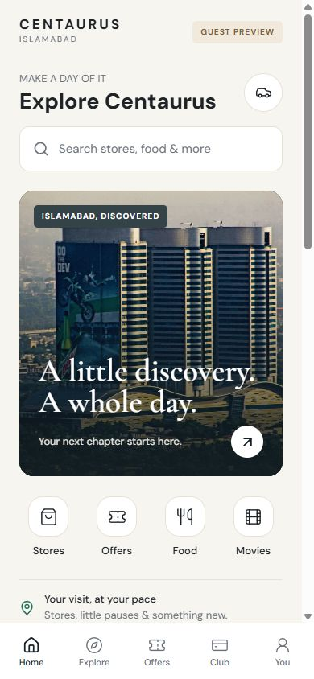
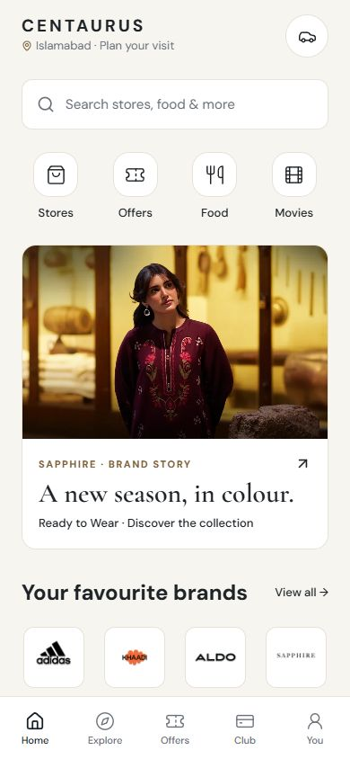
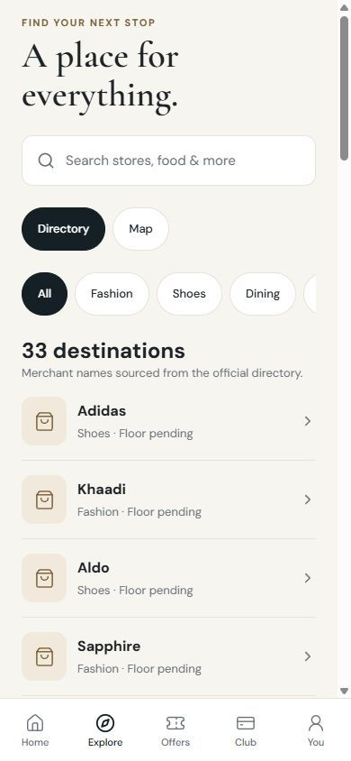
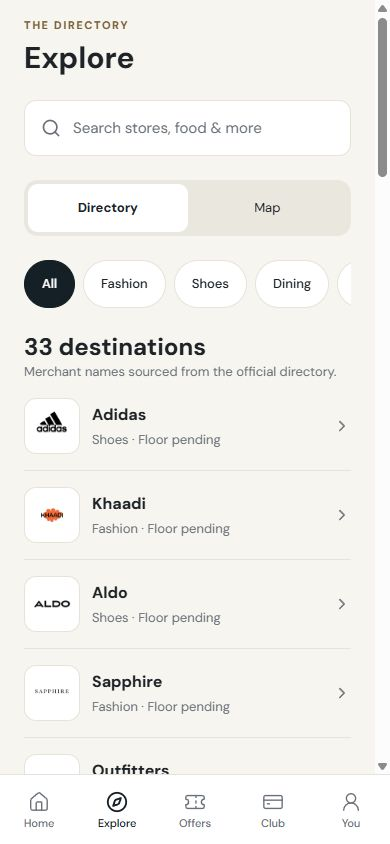
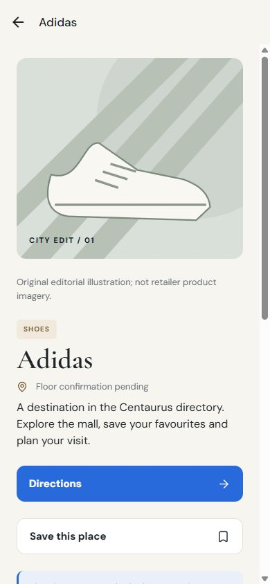
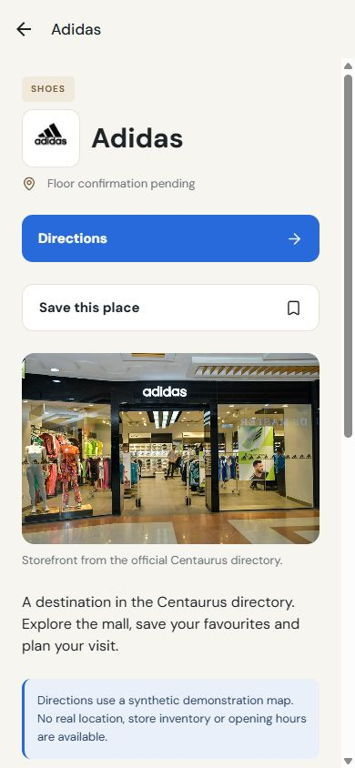
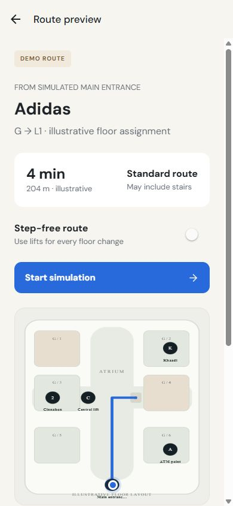
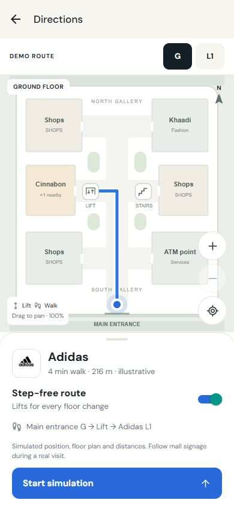

DESIGN REVIEW · 10 OCTOBER 2026A clearer visit.
A stronger presentation.
Actual browser screenshots of the running native Expo app's web renderer. Source-backed brand identity, task-first hierarchy, optional guidance and a working indoor-route simulation.
Meeting script · Verification and limits · Asset rights
Home
Before
After
Directory
Before
After
Store detail
Before
After
Directions
Before
After
New journeys and details
All geometry and navigation positions are simulated. Brand creative remains copyrighted by its respective owners. Physical device accessibility and gesture checks remain a pre-meeting rehearsal step.